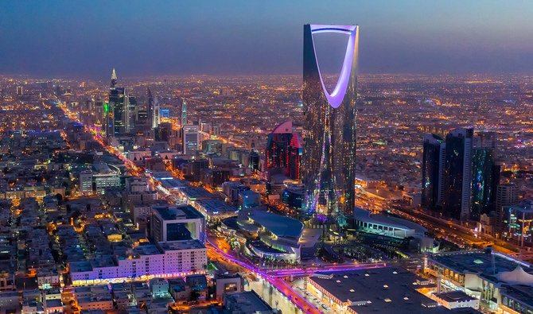
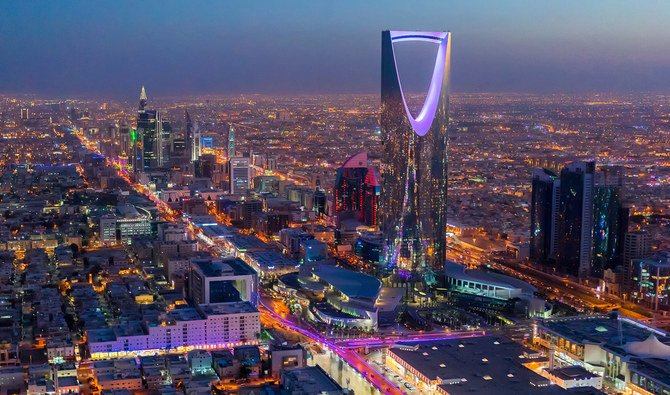

Holiday Destinations
Malaysia is located in the asian continent next to Thailand, Vietnam and Indonesia. Malaysia is known for its sunny weather, beaches and
wildlife. Petronas Twin Towers is one of Malaysia’s most famous landmarks. This tower held a record of the world’s tallest building in
1998-2004 before Burj Khalifa tower breaks the record in Dubai. When I went there I was amazed at how tall this building was. Two days
after I then visited the cable cars of Malaysia which is a huge attraction. Langkawi Cable Car offered a new sensation of riding a flying
gondola over the height 709 meters above the sea level. In the twenty-minute journey, I enjoyed the enchanting panorama of tropical forests.
From my experience I would rate this holiday a 9/10.
Saudi Arabia is located in the middle east next to Iraq and Ethiopia. Saudi is known for its extremely hot weather, oil and 2 holy muslim sites. In
summer temperatures hit 50 degrees. The most famous monument in Saudi is in the centre of the city called Kingdom tower which is
one of the tallest buildings in the world. Another famous place in Saudi is called the edge of the world. This is a massive cliff in the
saudi arabian desert which is a 300m drop in which people can camp next to it. The two holy sites in Saudi are called Makkah and Madinah
which is the reason why muslims around the world all go to Saudi Arabia. In my opinion Saudi is one of the best countries I have ever been
too.From my experience I would rate this holiday a 8.5/10.
Dubai is located also in the middle east next to Saudi Arabia and Qatar. Dubai is known for its tourism, beaches and weather. One of the most
famous tourism spots in dubai is the Burj Khalifa known as the tallest tower in the world measuring 830 m high. In addition to this, next to
the burj is the Mall of Emirates which is the biggest mall in the world which is over 12 million square feet Another main attraction in dubai
is the famous water park Atlantis which is situated on a man made island. From my experience I would rate this hoiday a 9/10.
Turkey is located in Europe next to Bulgaria, Azerbeijan and Greece. Turkey is known for its hot springs, mosques and cuisine. One of the most
famous monuments in Turkey is the Aya Sophia which is located in the heart of turkey, famous for its architectural excellance. Mosques are on every
street in Turkey and are the worlds best. The turkish cuisine is a blend of mediterranean and middle eastern cuisine mainly consisting of grilled food.
Apart from the food the capital Istanbul hostsa rich history where the Ottoman empire once lived, as they conquered the world. Guided tours show you
the palace where the Ottomans used to live and shows you the architectural brilliance the ottomans had. I would rate this holiday an 8.5/10.
Berjaya, Malaysia
Dubai
 Istanbul, Turkey
Istanbul, Turkey
 Saudi Arabia

Saudi Arabia

Links for tourist attractions